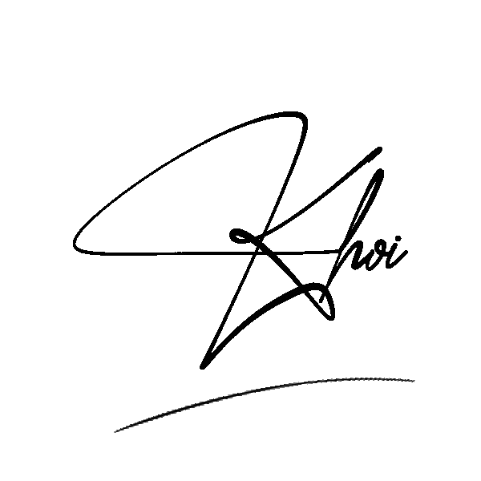

dear ỉn,
dm 3 năm r cơ à
Uh đ ngờ t chơi với m tận 3 năm r ý. Dm k ai ngờ là tận từ lúc còn bộ 3 truyền thuyết đô thị (đụ má nhắc lại cũng kinh vloz) đến tận bây giờ là hết mẹ c3 r. Ê nh lúc t thấy m kiểu bựa vcloz bựa?? Kiểu nh cáit đ nghĩ dc là 1 đứa như m nói dc xong t kiểu ??? vcc con này bị điên r à đụ má. Xong dm m toàn chửi t cơ mà dm chửi kiểu vui vui hài vl =))). Cx cx đi =))). Xong dm nh lúc m còn toàn nghe tbm tâm sự xàm loz linh tinh buổi đêm mà toàn mấy chuyện đ gì của t ý m vẫn nghe dc ạ =))) vibes rất là trôn trôn nhs. Dm nghĩ sau đ dc cùng lớp nữa cũng buồn, nên là dmmm có chết cũng đ đc từ bỏ tình bạn này nhs để có gì sau t còn nhờ m bao nuôi nhs hihi. ờm thra t muốn nói nữa nma t mat goc tviet hihi. DCMMM M PHẢI THỦ KHOA NV1 CHO T NHỚ CHƯA??!? hihi chắc v thoi, dù sau này m có buồn cgi cũng ph kể cho t nhs ❤️🩹. T quý m nhiều hơn ngày hqua và ít hơn ngày mai hihi
1 trong 3 truyền thuyết đô thị l10

Nguyễn Cảnh Khôi